4.2.1.6 Vulnerabilidades, parches, cifrado y certificados
1. Vulnerabilidades de Software
Este apartado del entorno, permite detectar vulnerabilidades del software en dispositivos administrados que ejecutan Windows. Las Vulnerabilidades se detectan en el sistema operativo y en las aplicaciones que desarrollaron Microsoft y otros proveedores.
Las características son:
- Se puede configurar con qué frecuencia ejecutar la detección de vulnerabilidades en dispositivos administrados.
- La lista de vulnerabilidades contiene solo aquellas vulnerabilidades que se detectan y que están activas en al menos un dispositivo administrado.
- Se puede filtrar la lista de vulnerabilidades según los siguientes parámetros:
- El proveedor de la aplicación en la cual se detecta una vulnerabilidad (Microsoft, otros proveedores o todos los proveedores).
- Nivel de gravedad de una vulnerabilidad (Crítico, Alto, Advertencia o todos los niveles de gravedad).
- Si se piensa solucionar una vulnerabilidad en todos los dispositivos donde se detecta, en algunos dispositivos, o no se piensa solucionarla en absoluto.
- Para cada vulnerabilidad, Kaspersky Endpoint Security Cloud muestra una lista de dispositivos en los cuales se detecta la vulnerabilidad. Si la lista de dispositivos contiene registros idénticos (registros con el mismo nombre del dispositivo y con la misma hora de detección de la vulnerabilidad), significa que hay varias revisiones que pueden solucionar esta vulnerabilidad del dispositivo.
- También se puede ver el informe sobre vulnerabilidades detectadas o directamente se puede configurar la instalación de las revisiones que solucionan las vulnerabilidades detectadas.
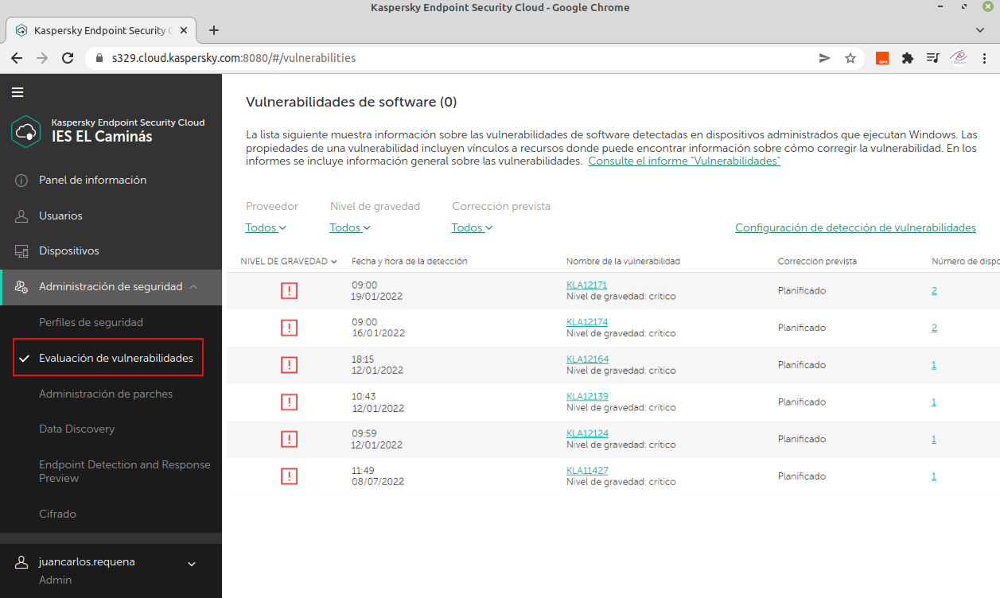
Figura 1. Panel de evaluación de vulnerabilidades.
2. Parches de Software
Esta sección permite instalar revisiones de software que solucionan vulnerabilidades detectadas en dispositivos administrados que ejecutan Windows.
2.1 Configurar la instalación de parches
La lista de revisiones contiene solo aquellas revisiones que solucionan las vulnerabilidades que figuran en la lista de vulnerabilidades activas.
Se puede filtrar la lista de revisiones según los siguientes parámetros:
- El proveedor de la aplicación para la cual se emite el parche (Microsoft, otros proveedores o todos los proveedores).
- Nivel de importancia de una revisión (Crítico, Alto, Medio o todos los niveles de importancia).
- El estado de la instalación de una revisión (si el parche se prevé instalarse, y si usted debe aprobarlo o aceptar los Contratos de licencia de usuario final).
Desde las propiedades de una revisión, puede aprobarlo y aceptar los Contratos de licencia de usuario final (si se exigen para la instalación del parche).
Para cada revisión, KES Cloud muestra la lista de dispositivos en los cuales se detectan las vulnerabilidades que solucionó el parche. Se puede filtrar la lista de dispositivos según el estado de instalación del parche.
Si no se puede instalar un parche para una aplicación porque se está ejecutando en ese momento, se le solicita al usuario del dispositivo que cierre el software. Las acciones adicionales dependen de la respuesta del usuario:
- Si el usuario cierra la aplicación, la instalación del parche continúa.
- En cambio, si omite la acción, la instalación del parche también continúa, pero puede que se deba reiniciar el dispositivo.
- Si el usuario cancela la solicitud, la instalación del parche no se completará y se volverá a intentar durante el próximo inicio programado.
Para configurar la instalación de un parche, hay que abrir la Consola de administración de Kaspersky Endpoint Security Cloud y seguir los siguientes pasos.
1. Seleccionar la sección Administración de seguridad → Administración de parches y hacer clic en el enlace 'Configuración de instalación de parches'.
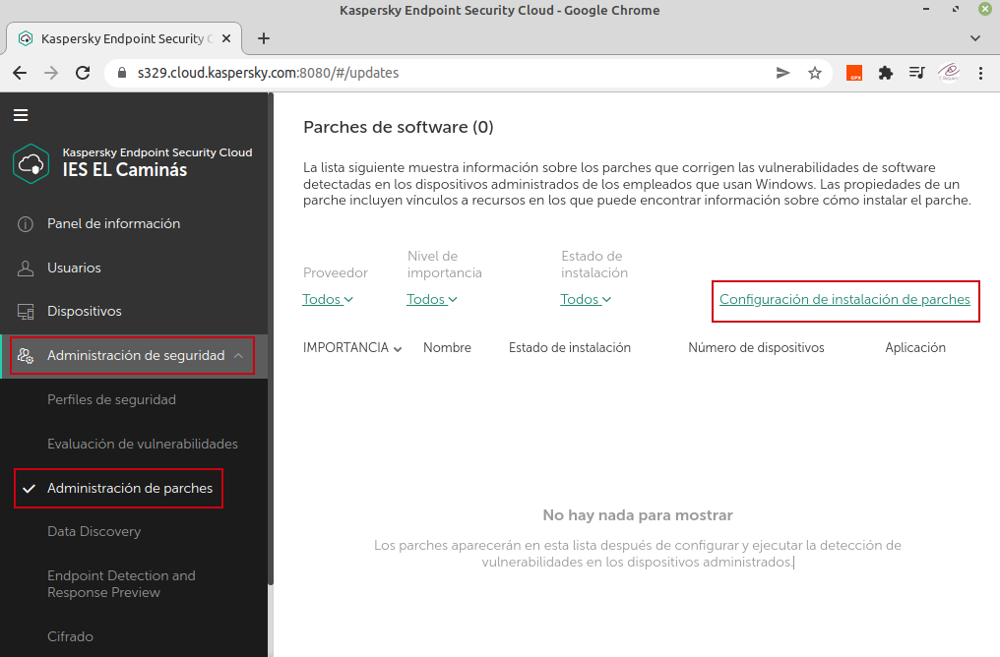
Figura 1. Acceder a la configuración de instalación de parches.
2. A continuación, se abrirá la ventana 'Configuración de instalación de parches'. En la lista Modo de instalación, hay que seleccionar el valor requerido:
- Instalar solo los parches aprobados (de forma predeterminada). Se puede aprobar las revisiones que se deben instalar y no aprobar las que no se deben instalar. Por ejemplo, comprobar la instalación de revisiones en un entorno de prueba y asegurarse de que no interfieran con el funcionamiento de los dispositivos, y a continuación permitir la instalación de estas revisiones en dispositivos administrados.
- Instalar todos los parches.
3. En la lista Área de instalación, hay que seleccionar si las revisiones se deben instalar en algún tipo del dispositivo o instalarse por separado en servidores o estaciones de trabajo.
4. En la lista Programación de la instalación, hay que seleccionar el valor requerido:
- Desactivada (de forma predeterminada): la instalación del parche nunca se ejecuta.
- Cada semana: determine el día de la semana y la hora en que la instalación del parche se deba ejecutar.
- Cada día: determine el tiempo en que la instalación del parche se deba ejecutar.
5. Si la opción 'Iniciar la instalación al reiniciar o apagar el dispositivo' está activada, las revisiones se instalan cuando el dispositivo se reinicia o se apaga. De lo contrario, las revisiones se instalan según lo programado. Hay que utilizar esta opción si la instalación de las revisiones pudiera afectar el rendimiento del dispositivo.
6. En Opción de reinicio del sistema operativo, hay que seleccionar qué hacer si la instalación del parche requiere el reinicio del sistema operativo del dispositivo:
- No reiniciar el dispositivo. Los dispositivos administrados no se reinician automáticamente después de la operación. Para completar la operación, los usuarios deben reiniciar sus dispositivos. Esta opción es conveniente para servidores y otros dispositivos donde la operación continua es crítica.
- Reiniciar el dispositivo. Los dispositivos administrados siempre se reinician automáticamente si se requiere para la finalización de la operación. Esta opción es útil para dispositivos que presentan pausas habituales en su operación (apagado o reinicio).
- Solicitar acción del usuario. El recordatorio de reinicio aparece en la pantalla del dispositivo administrado solicitándole que reinicie el dispositivo manualmente. Puede cambiar el texto del mensaje para el usuario. Esta opción es la más conveniente para las estaciones de trabajo donde los usuarios deben poder seleccionar el tiempo más oportuno para un reinicio.
Si se activa la opción Reiniciar el dispositivo después de que esté inactivo durante más de 30 minutos, luego de preguntarle al usuario, la aplicación obliga a reiniciar el sistema operativo al vencer el intervalo especificado. De lo contrario, los usuarios deben reiniciar sus dispositivos manualmente.
Para consolidar los cambios hay que pulsar el botón Aceptar.
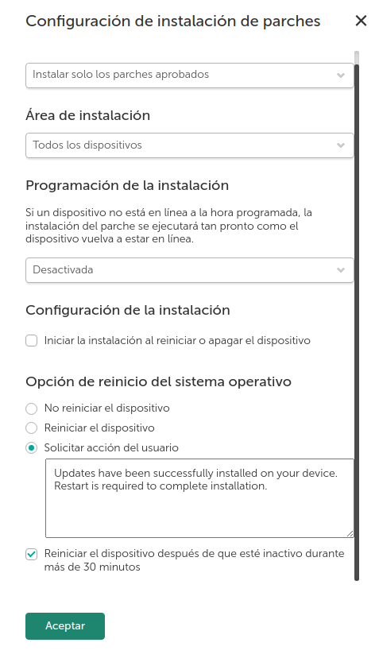
Figura 2. Configuración de instalación de parches.
3. Cifrado
KES Cloud permite configurar el cifrado de dispositivos administrados que ejecuten sistemas operativos Windows o macOS. El cifrado es una medida adicional de seguridad que evita que otros usuarios accedan a datos almacenados en los discos duros sin la autorización necesaria.
Los dispositivos Windows se cifran con el cifrado nativo de Windows: BitLocker y pueden cifrar todas las particiones de los discos duros. Las claves de recuperación se almacenan en la infraestructura de Cloud. El cifrado es compatible para Windows a partir de la versión 10 con Service Pack 2.
Los dispositivos que ejecutan macOS se cifran con la función de cifrado del disco de FileVault.
Cuando un administrador inicia el cifrado de FileVault de un dispositivo desde KES Cloud, le solicita al usuario de este dispositivo que ingrese sus credenciales. El cifrado del disco solo comienza después de que el usuario proporciona las credenciales y que el dispositivo se reinicia. Las claves de recuperación se almacenan en la infraestructura Cloud. El cifrado es compatible con Mac a partir de la versión 11.
Para usar el cifrado en un dispositivo, se debe activar y configurar el cifrado en el perfil de seguridad que protege el dispositivo. El informe sobre el cifrado está disponible en la sección Informes.
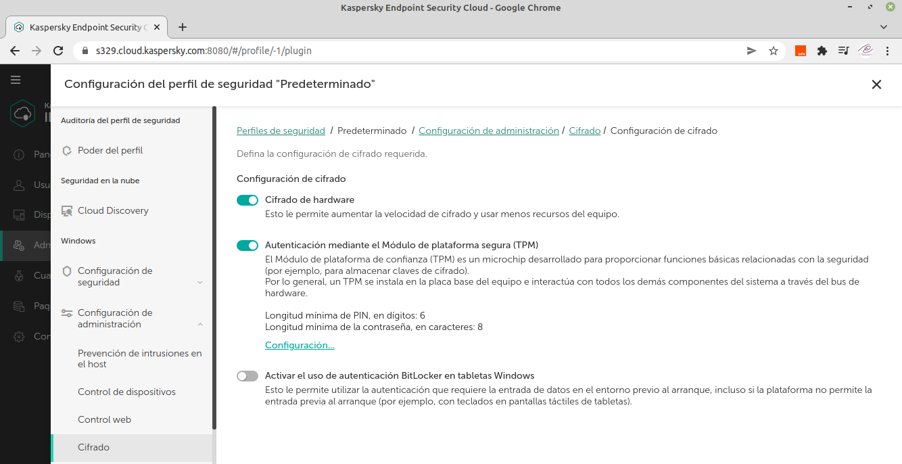
Figura 2. Configuración de cifrado Windows.
4. Creación, renovación y envío de un certificado de APNs
Uno de los pasos más interesantes es generar un certificado de APN para poder administrar dispositivos iOS.
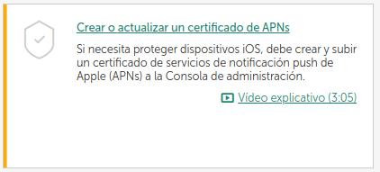
Para administrar dispositivos móviles iOS (mediante el envío de comandos a los dispositivos o la modificación de los ajustes del dispositivo), se debe crear un certificado del servicio de notificaciones push de Apple (certificado de APNs) y cargarlo en la Consola de gestión de Kaspersky Endpoint Security Cloud. Las actividades de creación y carga de un certificado se realizan una vez por espacio de trabajo.
NOTA: Sin un certificado de APNs, no es posible administrar dispositivos iOS.
La creación, renovación o carga de un certificado de APNs se desarrolla en etapas:
Etapa 1. En la Consola de administración de Kaspersky Endpoint Security Cloud, hay que crear una solicitud de firma de certificado (CSR).
Etapa 2. En el portal de Apple Inc., se recibirá un certificado de APNs mediante el CSR que se firmó y se podrá guardar en el equipo.
| 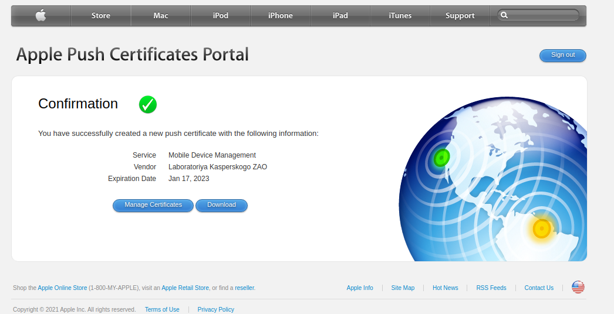 | 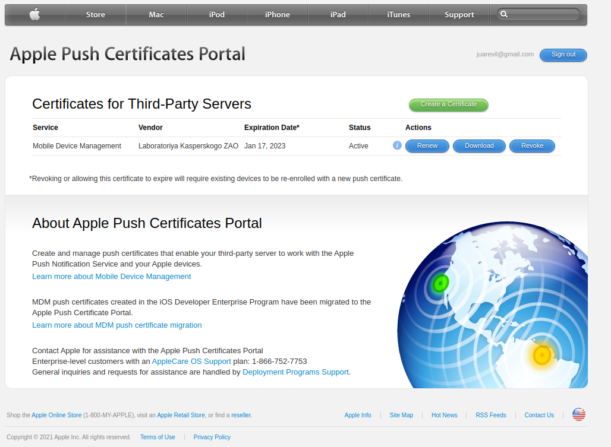 |
| Generación de certificado | Gestión de certificados |
Etapa 3. A continuación, hay que cargar el certificado de APNs que se haya recibido en la Consola de gestión de Kaspersky Endpoint Security Cloud.
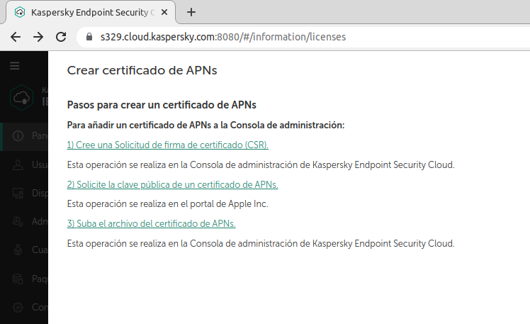
Requisito previo
Para crear un certificado de APNs, se debe obtener una ID de Apple. Si no se tiene ID de Apple, hay que registrarse en el portal de certificados push de Apple. Se recomienda evitar usar el ID personal de Apple.
Creación o renovación de un certificado de APNs
Los procedimientos para crear un nuevo certificado de APNs y renovar uno existente que haya caducado son similares. Si se tiene un certificado APNs activo, se puede enviar a la Consola de administración de Kaspersky Endpoint Security Cloud sin necesidad de crearlo o renovarlo. Ver el segundo procedimiento de esta sección.
El certificado de APNs se crea en una ejecución. Se deben seguir los pasos para su creación sin interrupción porque el proceso de firma tiene una marca de tiempo, que caducará si el proceso de creación tarda demasiado.
Para crear o renovar un certificado de APNs, hay que seguir los siguientes pasos:
1. En la sección Panel de información, en la pestaña Primeros pasos, en Recomendados, hay que hacer clic en el enlace Crear o actualizar un certificado de APNs.
2. El Asistente 'Crear, renovar o cargar un certificado de servicio de notificación push de Apple (certificado de APNs)' comienza con una página que indica las posibles acciones.
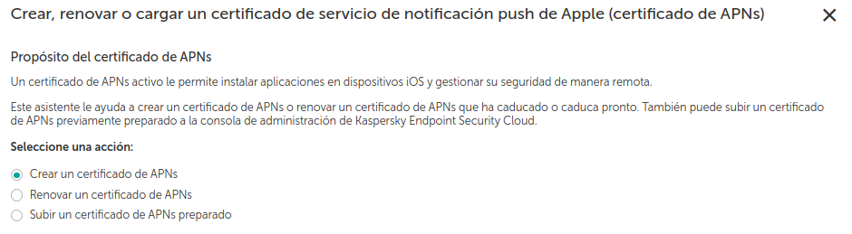
3. Hay que seleccionar la opción 'Crear un certificado de APNs o Renovar un certificado de APNs ' (dependiendo si es creación o renovación) y hacer clic en Siguiente. Esto abre una página que contiene una lista de los pasos que se deben seguir para obtener un certificado de APNs. Si solo quiere cargar un certificado de APNs preparado a la Consola de gestión de Kaspersky Endpoint Security Cloud, hay que seguir el procedimiento aparte que se verá más abajo 'Carga de un certificado de APNs previamente preparado'.
4. Para este caso de ejemplo, se selecciona el enlace 'Cree una Solicitud de firma de certificado (CSR)', ya que aún no se tiene ninguno y desde lo servidores de Kaspersky, se generará un archivo CSRfile.plist que habrá que guardar en el equipo.
5. A continuación, se abre la página Crear CSR, donde hay que rellenar los siguientes campos de entrada: Nombre, Empresa, Departamento, Ciudad, Comunidad autónoma y País y región. De forma predeterminada, el campo Empresa especifica el nombre de nuestra empresa y el campo País y región especifica el nombre del país y la región donde se encuentra la empresa. Todos estos campos de entrada son obligatorios.
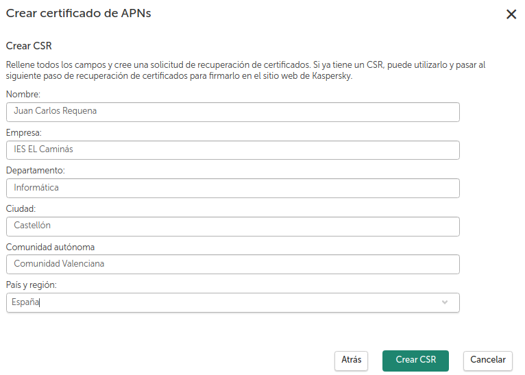
6. A continuación, hay que pulsar 'Crear'. Se creará un archivo del CSR. El archivo del CSR que haya creado se guarda en una carpeta del equipo (de forma predeterminada, todos los archivos descargados se guardan en la carpeta Descargas). Ejemplo: Se genera el fichero CSRfile.plist.
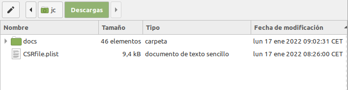
7. Una vez descargado el fichero, aparece la siguiente página, donde se informa de los pasos a seguir. Si se tiene el id de Apple, hay que ir al paso 2.
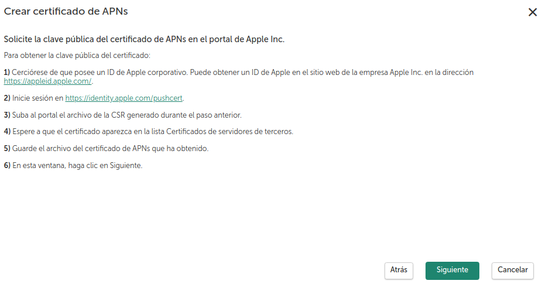
8. Hacer clic en el enlace indicado para iniciar sesión en el portal de certificados push de Apple. La nueva pestaña del navegador muestra la ventana 'Iniciar sesión' con los campos de entrada 'ID de Apple' y 'Contraseña'.
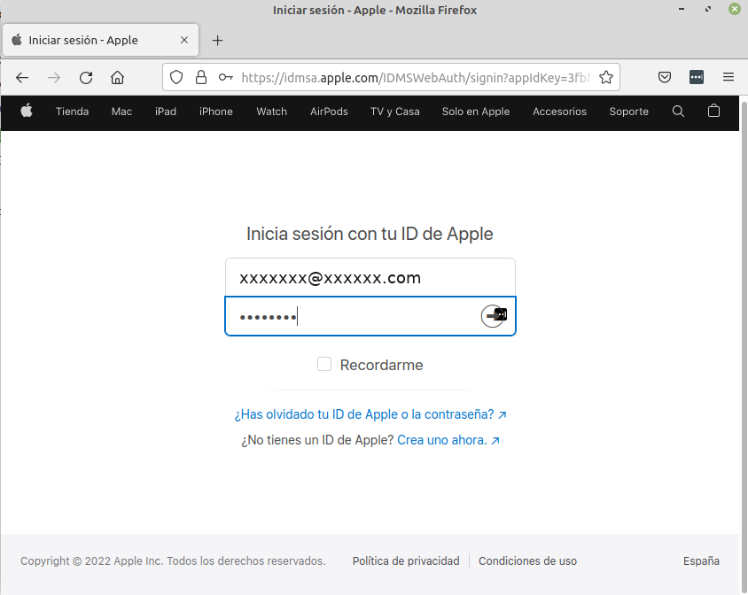
9. Una vez introducidas las credenciales, se abrirá la ventana Crear un nuevo certificado push. Hay que hacer clic en Examinar para seleccionar el archivo del CSR firmado en el equipo.
| 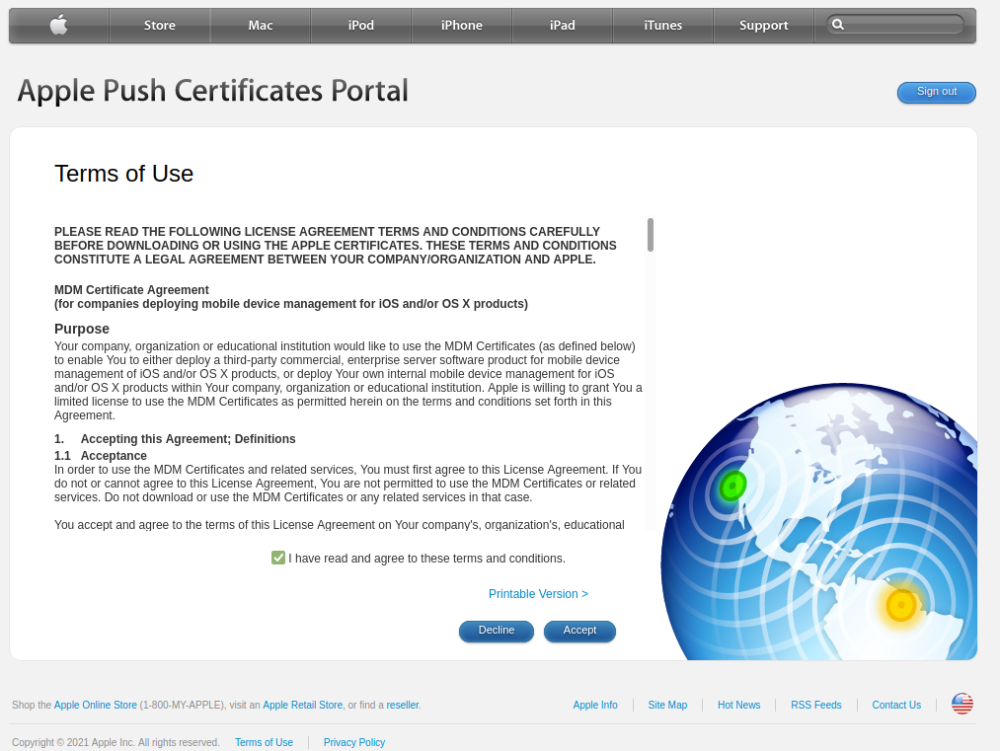 | 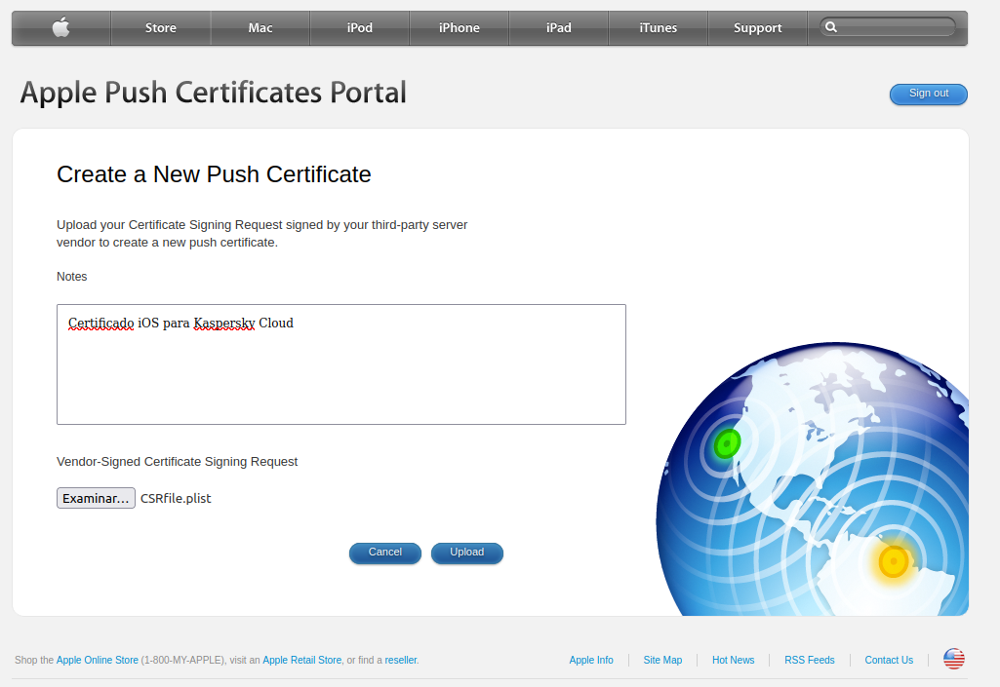 |
10. A continuación, hay que pulsar Upload, comienza el proceso de verificación del archivo. Si todo va bien, se genera el certificado y a continuación se abrirá la ventana Certificados de servidores de terceros, mostrando el certificado para poder descargarlo con una validez para 1 año. Si se pulsa 'Download' el certificado de APNs se guarda en el equipo. Ejemplo: Al pulsar 'Download', se descarga en el equipo el fichero MDM_ Laboratoriya Kasperskogo ZAO_Certificate.pem, certificado que expira el 17 de Enero de 2023. Si se pulsa en 'Manage Certificates', se podrá realizar la renovación, descarga o revocación del mismo.
11. En la Consola de gestión de Kaspersky Endpoint Security Cloud, en la página del Asistente 'Solicite la clave pública del certificado de APNs en el portal de Apple Inc', hay que hacer clic en Siguiente.
| 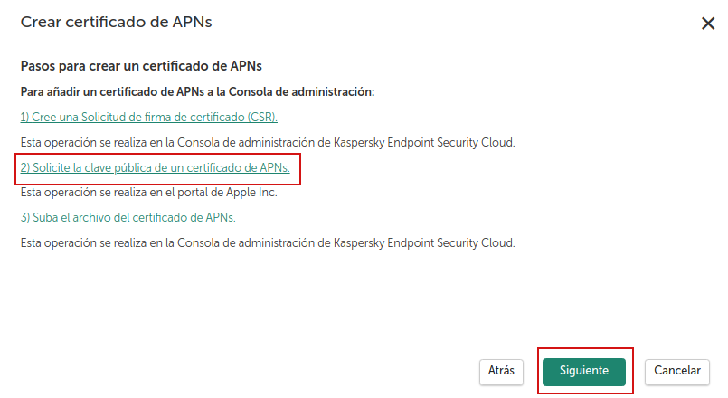 | 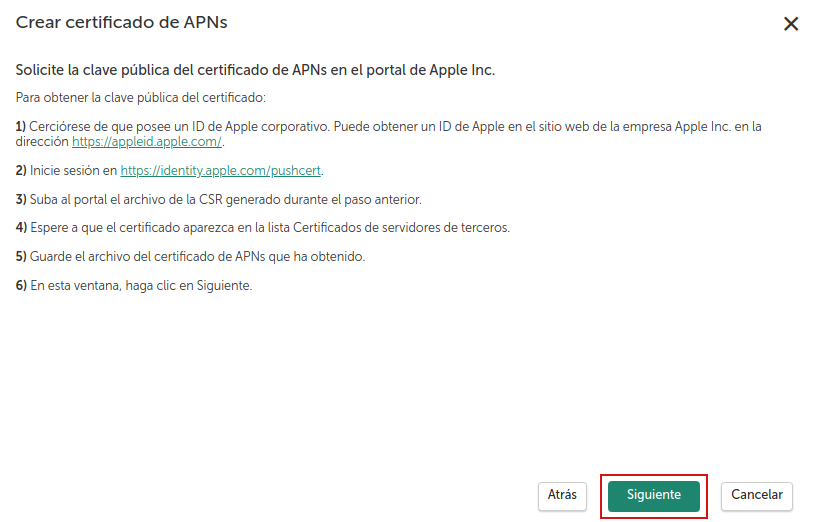 |
| Pulsar Siguiente | Pulsar Siguiente |
12. En la página 'Subir un certificado de APNs preparado a la Consola de administración 'que se abre, hay que hacer clic en el botón Examinar y seleccionar el archivo de un certificado de APNs desde la lista de archivos del equipo. A continuación, hay que pulsar 'Siguiente'.
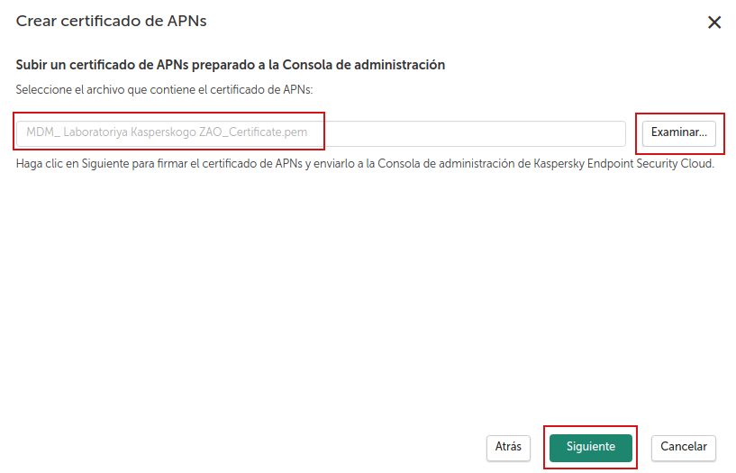
13. Se abre la página Detalles del certificado de servicio de Apple Push Notification que contiene el nombre del archivo descargado, el nombre del centro de la certificación y las fechas de inicio y fin de la validez del certificado.
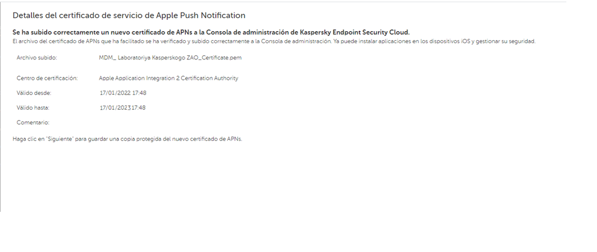
14. A continuación, hay que pulsar 'Siguiente', y se abrirá una página que solicita crear una copia de seguridad del certificado de APNs protegida por contraseña en el disco duro del equipo.
15. A continuación, hay que seleccionar la acción quese desea realizar con el certificado de APNs:
- Finalizar la creación o renovación del certificado de APNs sin crear una copia de seguridad.
- Crear una copia del certificado de APNs protegida por contraseña en el disco duro de su equipo (opción predeterminada).
Si se elige la opción que incluye crear una copia del certificado de APNs, hay que introducir la contraseña para proteger este certificado. A continuación, hay que confirmarla y hacer clic en el botón Guardar copia protegida del certificado de APNs.
16. A continuación, hay que pulsar el botón 'Aceptar'. Si elige la opción que incluye la creación de una copia del certificado de APNs, se guarda una copia protegida por contraseña de dicho certificado en el disco duro del equipo. Se cierra el Asistente para preparar el certificado de APNs.
Una vez se ha completado la creación o renovación del certificado de APNs, el certificado de APNs se carga a la Consola de gestión de Kaspersky Endpoint Security Cloud.
Nota: En cada paso del procedimiento de creación o renovación de un certificado de APNs, se puede volver al paso anterior haciendo clic en el botón Atrás.
Tras crear y renovar correctamente un certificado de APNs, se pueden conectar dispositivos iOS a Kaspersky Endpoint Security Cloud, enviar comandos a dispositivos iOS, instalar aplicaciones en dispositivos iOS y configurar esos dispositivos utilizando un perfil de seguridad.
Carga de un certificado de APNs preparado previamente
Para enviar un certificado APNs preparado previamente a la Consola de administración de Kaspersky Endpoint Security Cloud, hay que seguir los siguientes pasos:
1. En la sección Panel de información, en la pestaña Primeros pasos, en Recomendados, hay que hacer clic en el enlace Crear o actualizar un certificado de APNs. El Asistente 'Crear, renovar o cargar un certificado de servicio de notificación push de Apple (certificado de APNs)' comienza con una página que indica las posibles acciones. Hay que seleccionar la opción 'Subir un certificado de APNs' preparado y hacer clic en 'Siguiente'.
Esto abre la página Subir un certificado de APNs previamente preparado
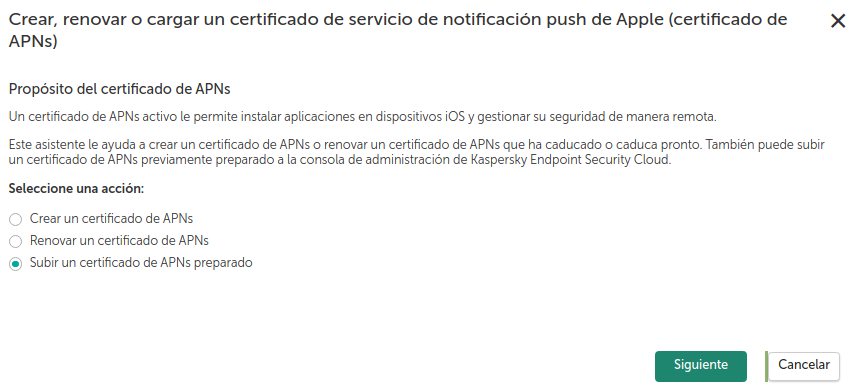
2. A continuación, se abre la página 'Subir un certificado de APNs previamente preparado'. Hay que hacer click en el botón Examinar y seleccionar un archivo de certificado de APNs de la lista de archivos del equipo. Para continuar, hay que pulsar 'Siguiente'.
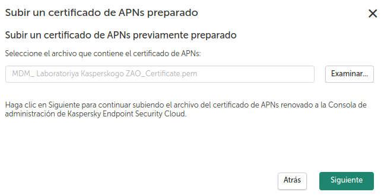
3. Si el archivo del certificado de APNs está protegido por contraseña, se abrirá una página donde se solicita la contraseña. A continuación, hay que introducir la contraseña que protege el archivo del certificado de APNs y hacer clic en Siguiente.
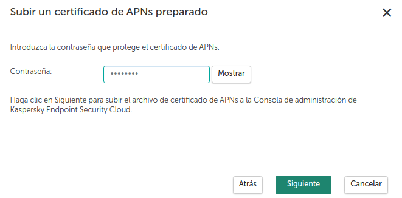
4. Si todo ha ido bien, se abre la página Datos del archivo de certificado descargado que indica el nombre del archivo descargado, el nombre del centro de la certificación y las fechas de inicio y fin de la validez del certificado. Si el archivo del certificado de APNs no se corresponde con el espacio de trabajo con el que está trabajando en esos momentos, se muestra un mensaje de error.
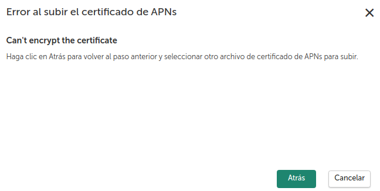
5. A continuación, hay que hacer clic en Aceptar. El certificado de APNs se carga a la Consola de gestión de Kaspersky Endpoint Security Cloud.
Nota: En cada paso del procedimiento de carga de un certificado de APNs, puede volver al paso anterior haciendo clic en el botón Atrás.
Tras enviar correctamente un certificado de APNs, se puede conectar dispositivos iOS a Kaspersky Endpoint Security Cloud, enviar comandos a dispositivos iOS, instalar aplicaciones en dispositivos iOS y configurar esos dispositivos utilizando un perfil de seguridad.
Obra publicada con Licencia Creative Commons Reconocimiento No comercial Compartir igual 4.0